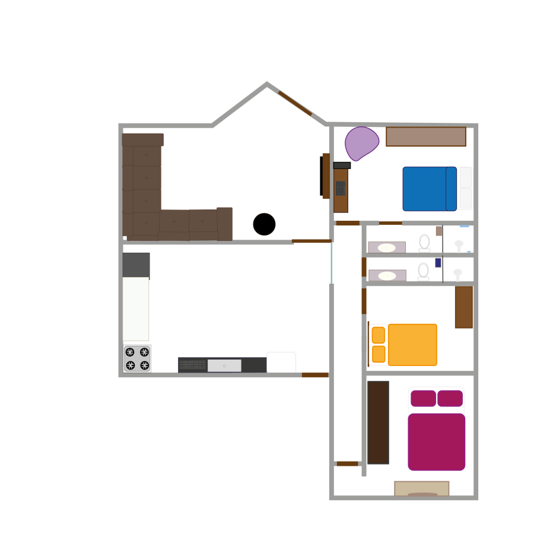

Os dados do quadro referen-se a pontência em watts, ao tempo de uso diário em minutos, ao consumo mensal de kw/h e em reais.
Eles representam o consumo mensal de uma pessoa.
A lampada tem 10 watts de potência e é utilizada 120 minutos diariamnete. Consome 6kw/h e R$ 7,62.Já a geladeira tem 200 watts de potência,
é utilizada 1 minuto diariamente.Consome 0,9kw/h e R$1,14. O computador tem 24 watts de potência e é utilizado 60 minutos diariamente.
Consome 1,02 kw/h e R$1,29. Por fim, o ventilador tem 80 watts de potência e é utilizado 300 minutos diariamente. Consome 12kw/h e R$5,24.
IMAGEM

PÁGINA INICIAL